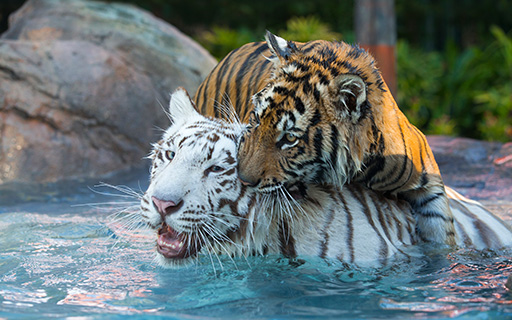

I've just been on hols with my kids to (aaahhh!) the Gold Coast. We visited Dreamworld, Sea World and, in the middle of the renamed 'Steve Irwin Way', the Australia Zoo where Terry Irwin impersonated the late Steve in a croc show and Bindi Irwin sang with the Crocmen and otherwise embodied the corporate PR plan to imitate the Wiggles' road to stardom.Meanwhile, I couldn't help noticing something. We visited three 'animal shows' and all had a strong conservation message and all were in aid of raging carnivores. Tigers, Dolphins and Crocs. Dolphins go through 12-15 kilos of fish a day we were told. It hit me that the enthusiasm for conservation raised a point I tried to raise on Troppo a while back - pretty unsuccessfully judging by the comments thread on that and other posts.
It is something that has always surprised me. It is this.
In doing more than anyone else to spur the modern incarnation of the animal welfare movement into action Peter Singer says he argued - and still argues - his case for 'animal liberation' on utilitarian grounds. As I understand it, the utilitarian case for 'animal liberation' is that suffering is bad, that (in principle) it's as bad for animals as humans and that therefore we should not inflict suffering on animals (anything other than this is 'speciesism'). Despite my sympathy for the sentiments, I find this argument deeply unsatisfying for a range of reasons. The purloining of lingo from human liberation movements - 'animal lib' and 'speciesism' seems deeply misguided to me.
Now at the outset (and to try to allay some of the misunderstandings that occurred last time), I should say first that I'm very sympathetic to the argument that we should try to minimise the suffering we inflict on animals.
But what troubles me is that I regard this as a kind of aesthetic argument. I don't mean by that that it's not an ethical or moral argument. It is. But I think of it as an argument which relates more to our own image of ourselves and our relationships and how we want to think of them. The idea that we can make any sense out of some mission to minimise animal suffering seems hubristic and self-evidently absurd to me. I think the idea of us trying to be 'rational' in minimising animal suffering mocks our reason. It seems to me to lead directly and immediately into a bunch of dilemmas which would commence any genuinely utilitarian treatment of the issues. The fact that such questions barely get raised at all and when they do receive short shrift leads me to think that Singer's analysis is far from utilitarian despite his claims for it and apparent belief that it is.
To quote an earlier post.
The basic idea of utilitarianism is that we think of moral questions by doing some economic style accounting against a pleasure/pain calculus. The standard economic questions arise here like 'are we getting maximum effectiveness in achieving a better pleasure/pain optimum for our efforts?'
If you're not doing that at some level (even after one has taken the step back required by 'rule utilitarianism' and asked what rules might optimise pleasure and pain) then I can't see how you sensibly say that you're being a utilitarian.
So consider non factory farming. Are animal lives good? How does the badness of the death of an animal detract from the goodness of its life? If its not a cruel death say they don't even know they're dying does it detract at all? Say an abattoir death does detract from a life, but a good healthy life is better than the death (leaving a net positive in terms of animal welfare) then farming and killing for meat is good right?
There then arise a whole lot of further questions. Leaving aside hugely imponderable questions like what other things might have happened on the land if it didn't grow meat (and the other things that might have grown there - including insects parasites etc) the main one seems to me to be that if we think mammals are by and large equivalent to each other, then farming sheep to eat is better than farming cows (more happy lives per acre). Of if death outweighs the benefit of a life (perhaps because it was a short one for instance) then the reverse holds and you grow beef not lamb.
Now its quite true that I find this stuff pretty absurd, but that seems to me to be the very first place utilitarianism takes us. Maybe I'm wrong, but wouldn't you expect it to receive some useful treatment perhaps for the sake of refuting my claim that it's a necessary part, indeed a prerequisite of any utilitarian analysis?
These concerns are really illustrative and the tip of the iceberg. Because a properly utilitarian approach would (surely) ask optimising questions like 'what kind of expenditure of effort or money gives us the maximum reduction in animal suffering'? Who knows where that would take us, but our own diet and even our farming practices seem small beer. What's an insect life worth next to a mouse? Should we be optimising the number of insects in the world - at the expense of mammals - or vice versa?
Then as I thought about these carnivores cavorting before us it all came flooding back. Conserve them by all means. But I think our conservation of them is really about us and our imaginations. About the fact that animals have always inspired all sorts of fantasies. We relate to animals like tigers, dolphins and crocs at a mythic level. So we'd be concerned about their suffering - because we relate to it. But this is precisely the kind of irrational connection that Singer is disposed to critique when it is applied for instance to the right of a very deformed and not very self-aware baby to live. Please don't read this as particularly sympathetic (or unsympathetic) to Singer's arguments on that score - it's not. But I am making one strong claim and that is that I can't make head or tail of the real philosophical underpinnings of Singer's writings on what he calls 'animal liberation'.
As these animals rampage through nature and inflict untold suffering on their fellow creatures - we are invited to loosely associate their conservation with 'animal liberation'. I wonder what Peter Singer would recommend regarding conservation of tigers, dolphins and crocs? I wonder why he doesn't (I'm assuming this and am happy to be proven wrong) devote some serious discussion to it in the hundreds of pages he's written on suffering, our relationship with animals, and what that relationship should be.
I agree with that, particularly the bizarre projection of idealised human values onto animals when those idealised human values are arrived at essentially by projecting ourselves (mentally) along a putative evolutionary path that takes us very far away from animals.
Also, my first impression is that arguably the logical necessities of the speciesism thesis (which I take to be some sort of fundamental human=animal equivalence) lead to the conclusion that we are misguided in our attempts to distance ourselves from animals, such as vegeterianism, prevention of cruelty, etc.
At the least we cannot justify these fundamentally non-animal choices on grounds such as respect for animals.
This may not quite fit in with your thesis, NG, but I have no doubt that 'saving' animals is made easier when the animal in question is very handsome. The big cats look superb, ergo (a) making a show about them is a sure-fire money-spinner and (b) simultaneously lets us feel good about ourselves.
I realise crocs are as ugly as a hatful of monkeys' bums, but even so they're still pretty spectacular.
Good post Nick.
I do find it difficult to take seriously the more extreme animal rights viewpoints given the "red in tooth and claw" realities about the natural world. Surely most farmed animals- other than those that are intensively farmed- enjoy a better quality of life than their peers in a wild state. The same goes for pets.
As a former shooter, I know that animals in the wild state, like foxes and rabbits, are often diseased, emaciated, suffering from worms etc... If such animals were capable of envy, I'm sure they would envy a well-fed and looked after cow or sheep in some farmer's paddock.
I don't think trying to evaluate whether animal's lives are good or bad, whether they be living in the wild or fenced in a paddock is a particularly useful measure. Life is a struggle. period. Its all relative both between and within species and difficult to quantify. Some days are diamond . . . etcetera. What is far easier to come to grips with is that as sentient beings, we share (or we're supposed to share) the world with other sentient beings, (many of whom are far more sentient than we). I think a basic premise in life should be to alleviate suffering wherever, whenever and on whomsoever or what if you like, it is ocurring. Personally, I tend to lean towards lending a hand to those who have no voice and who are truly innocent, ie, animals (and babies under two). The majority of adult people can go to hell in a hand cart as far as I'm concerned, and most are there already anyway.
Unfortunately farming practises still operate on the Descartian idea that because animals have no language they have no feelings. (oh very neat). But no idiot (and there are many) would subscribe to this view. Sadly, stupidly and illogically the entire infrastructure of factory farming is still largely based on this premise. And boy does it suck for the animals.
Utilitarian frameworks have their limitations, but it's not too bad as a starting point. However, unless you're arguing that deliberately inflicting cruelty on animals is OK (which I presume you're not, although it sort of feels like you are by default, by arguing against the idea of promoting the alternative), then I can't see why you are so keen to voice objections to the general concept. All it does is allow people to more easily acquiesce to the sort of unspeakable lifelong torment which we inflict on billions of sentient creatures just to satisfy the transient tantalising of our tastebuds.
Sure there can conflicting and balancing principles to take into account in some circumstances, but just because there can be disagreemtns about where the boundaries might lie is no reason to just dismiss the whole notion. Plenty of suffering is unavoidable, and just by virtue of being and staying alive we have to cause plenty of it, but that's no excuse to inflict large amounts more than we need to.
The phrase 'Animal Liberation' has turned out to be a great shorthand phrase to instantly communicate a philosophy against animal cruelty. However, I wouldn't recommend unpacking those two words as the core basis for a logically consistent framework for why reducing animal cruelty is a good idea (as opposed to a brief feelgood thing). For people who are interested, there are many people besides Peter Singer who have written in depth philosophical (and theological for that matter) examinations of some of the ethical questions in this area which go beyond narrow utilitarianism. However, while it is a valuable intellectual (and sometimes practical) exercise to consider where the limitations or conflicts might be in seeking to minimise animal cruelty in certain circumstances, the central principle is pretty simple.
It isn't necessary to be an animal libber to support conserving animals, although I think it value adds. Maximising biodiversity (which is a lot more than animals of course) is in our own long-term interests anyway.
Mind you, using animals for whatever we feel like in whatever way we like is deeply ingrained in our culture and economy (and many other peoples'). So much so that, despite the ample evidence that an animal based diet (and the use of animals for other products such as clothing) has far greater environmental impacts than many alternatives, most environmental groups do not push this fact (and of course no politician wanting to get re-elected would do it, regardless of how often the public demands that politicians tell the truth). To use just one example, depsite the current fashion for beating up on the cotton industry for their water consumption (with partial justification), cotton actually chews up far less water proportionally than the meat industry.
So even if you don't give a rats about whether animals suffer or not, in many cases (although admittedly not all) there is a strong environmental case for dramatically reducing our consumption of products derived from animals. Of course, saying so will probably just get you labelled as spouting 'air-headed mungbean crap', so most people just campaign to save the whales, while chowing down on other mammals every second day.
Andrew,
I don't know if your comments were addressed to me or other commenters, but if they're addressed to me, they misunderstand what I was trying to say. I did repeat in the post that I was sympathetic to animal welfare issues - indeed I am quite strongly so. I am also a fan of utilitarianism as an ethical system for thinking about public policy issues (though it has its limitations like all ethical systems).
My post makes a simple point, that I can't actually see anything other than the mannerisms of utilitarianism in Singer's stuff on animal welfare, and that a properly utilitarian analysis of animal welfare would lead off into all sorts of peculiar avenues.
"It isn't necessary to be an animal libber to support conserving animals, although I think it value adds. Maximising biodiversity (which is a lot more than animals of course) is in our own long-term interests anyway."
Animal rights and conservation are sometimes in conflict. Take for example animal rights activists who want to ban the use of 1080 to kill feral animals. The use of 1080 as part of Western Shield in Western Australia has seen various native animals, such as the chuditch and woylie, bounce back from the brink of extinction.
But some animal rights nutters would like to see it stopped because a few bloody feral cats and foxes suffer. Here's one example of such nuttery: http://members.iinet.com.au/~rabbit/Auscatz.htm And another http://www.animal-lib.org.au/lists/1080/1080.shtml
Unfortunately these animal rights kooks have infested the Greens, so in Victoria it is party policy to ban the use of 1080 poison. This is inspite of the success of 1080 in several Victoria conservation programs, for instance in relation to brush-tailed rock wallabies in Gippsland and the Grampians.
I'm glad Andrew B raised mulesing of sheep as an example (albeit on the Tim Blair/PETA thread). We can undertake a reasonable utilitarian calculus from available factual material.
First, at least according to the Wikipedia article on mulesing, there are several major possible alternatives to mulesing currently being reserched. They are:
- topical protein-based treatments (intradermal injections)
- selective breeding
- safe insecticides
- biological control of blowflies
-plastic clips on the sheep's skin folds (breech clips).
Trials with breech clips have apparently been very promising, with sheep not only avoiding being subjected to the trauma of mulesing but also subsequently putting on considerably more weight than mulesed animals. Thus it's likely that such technologies WILL be adopted in due course, if for no other reasons than commercial ones. However, none have yet been developed to a point where they can be used on a large scale across the industry.
Nevertheless, the Australian wool industry is committed to phasing out mulesing by 2010, and is engaged in heavy R & D to perfect these alternative methods (see this wool industry article). Now it may well be that the industry might not have embarked on that commitment and research had it not been for campaigns by animal lib organisations, but the fact remains that PETA are currently guilty of gross exaggeration and dishonesty in the way they present the situation. Contrary to what Andrew B claims, it appears that there isn't a presently available alternative to mulesing.
However, it WOULD clearly be technically feasible to anaesthetise sheep before mulesing. No doubt it's that possibility to which Andrew B refers when he says: "some in the industry refuse to use it because it costs too much money". However, although I'm anything but expert in this area, it isn't difficult to see the problem. When you go to the dentist, local anaesthetic takes about 10 minutes to take effect. I assume it would be similar for sheep. Hence you'd have to keep the sheep immobilised for that time before proceeding with mulesing. That would mean the procedure would take something like twice as long and no doubt cost twice as much. My general understanding is that wool is already an expensive niche fabric, finding it hard to compete with synthetics and even cotton in the mass market. It might well be that doubling the cost of mulesing would have devastating effects on the wool industry's viability. It would almost certainly result in the industry shrinking further in size and being confined to even smaller market niches.
What is the total utilitarian calculus of sheep happiness (assuming that concept has any meaning) for a smaller number of Australian merinos enjoying a life free from a one-off painful experience with unanaesthestised mulesing, versus a larger number of animals enjoying a similar life but being subjected to mulesing without anaesthetic? Buggered if I know, but the answer isn't self-evident.
I'm not sure I would disagree with you Nicholas that something like 'aesthetic' reasons or a scientifically groundless anthropocentrism are paramount in many people's decisions to try not to participate directly in the animal bodies trade or other things that involve killing animals or farming them cruelly. I would however want to stress that I think aesthetic reasons are extremely important and not to be put aside lightly.
Yes Laura, I wasn't trying to downplay the importance of aesthetic ideas by saying that most people's animal welfare predilections are best thought of as based on some idea of what they will and won't do personally - ie it is based around how they want to think of themselves and their own conduct rather than some utilitarian framework of minimising pain.
I guess I'm trying to unpack the ideas in people's feelings and ideological responses about this and where it takes them. Steve above thinks that objecting to 1080 poisoning of feral animals is just idiotic. I think it's quite reasonable. After all aren't animal welfare concerns supposed to be about the infliction of cruel (horrible) things on animals? But I still come down on his side of the debate ultimately - which means that any squeamishness about cruelty is trumped by some kind of regard for 'nature'. (Hence my - and most people's - fondness for conserving the carnage of cute carnivores).
'Nature' - there's an idea which needs unpacking.
My next research and teaching project after I finish my phd (March, jebus willing) will look at literature about animals as a way of thinking about human beings - from the Romantic poets to Virginia Woolf to J.M. Coetzee.
I forgot to say it before, but I think Link's comment above is spot on.
Nicholas says:
"Steve above thinks that objecting to 1080 poisoning of feral animals is just idiotic. I think it's quite reasonable."
It certainly makes no sense from a utilitarian perspective as each dead cat and fox saves literally hundreds of sentients lives, often in a manner far nastier than 1080 poisoning I imagine.
According to the Queensland EPA, feral cats knock off about 3.8 million native animals each year including "186 species of native birds, 64 species of mammals, 87 species of reptiles and 10 species of frogs" http://www.epa.qld.gov.au/nature_conservation/wildlife/threats_to_wildlife/invasive_plants_and_animals/cat/
In 2002 a single fox killed 5 of the last 6 remaining bruch-tailed rock wallabies in the Grampians, Victoria. I doubt that experience was terribly "aesthetic" for the wallabies or for the National Parks conservation staff who picked up the torn and bloodied carcasses.
Once again, this is anthropomorphic nonsense. "Aesthetics" and "animal rights" are human constructs that have no currency in any ecosystem.
Steve,
I guess you're right using the argument to which I alluded regarding carnivores. I guess I was arguing that if you take animal welfare seriously then the ghastly death involved in 1080 was something that should be of concern and not a trivial matter. But I agree with your basic argument, and the protection of native species trumps the anti-1080 argument we both agree.
When you say that "Aesthetics"
Peter Singer's views are not a matter of "aesthetics"
"When you go to the dentist, local anaesthetic takes about 10 minutes to take effect."
And Dentists get paid $500 an hour. We would have to pay an anaethisist a similar amount. You can't just go to a night class and learn how to apply potentially fatal drugs. There are laws against it.
Applying anaesthetic isn't as simply as jabbing someone in the ass, which is why it is a specialist area of medicine.
There is a fundamental difference between consequentialist conservation - we shouldn't shit in our own nest because we have to live in it - and the animal lib and deep green view - we shouldn't shit in the nest because it's not ours. I'm sympathetic to the former, antagonistic to the latter.
Now while Singer himself is a strict utilitarian (with perhaps a somewhat eccentric view of what the arguments to a utility function should include), very few of his professed followers are. In my experience they tend to mystical thinking about "animal consciousness" and "Gaia". Indeed the term "animal rights" points to that - a utilitarian should only talk of rights as contingent on their practical usefulness.
Brent H says:
"There is clearly scope for huge utilitarian gains in the area of factory farming given: the considerable suffering inflicted on billions of animals each year, the environmental damage done, the existence of tasty alternatives to factory farmed meat, and the tendency of people who eat less meat to enjoy better health."
Actually, Brent, the people who eat the least meat live in the developing world and die young.
If we put an end to factory farming, the poor would suffer the most. For example a middle-class person in Australia may be able to afford $4.50 for a dozen "free-range" eggs from the local organic food store, but not everyone can. You certainly can't if you are on the minimum wage and have children to feed. So why rank the happiness of a few chooks higher than the happiness of a Broadmeadows housewife and her progeny?
Moreover, if factory farming means less acreage must be devoted to farming overall compared to the free-range option, more land can be devoted in nature conservation. Accordingly the happiness of bilbies and bandicoots is maximised at the expense of chooks and cows. Personally I see this this as a very good thing indeed. And I suspect the bilbies and bandicoots concur.
Brent,
I've not really been making substantive comments on animal welfare issues, but on the way the argument is constructed. I support doing whatever is necessary to lessen the gross cruelty of the worst kind of factory farming. However I think Singer doesn't go to lots of places that his framework ought to take him as a high priority (perhaps because it would seem bizarre to his audience and so alienate his 'base'.
I should add that, irrespective of the impression my above comments may give, I do not support wanton cruelty against any animal- even if it is feral and destructive.
I also acknowledge that Singer is a brilliant and creative thinker- one of the finest this country has produced. I may not always agree with him, but he never fails to make me question my own beliefs.
Obviously my statement about people who eat less meat tending to be healthier was subject to an other factors equal rider (apologies for not noting this). See The American Journal of Clinical Nutrition, Supplement to volume 78, 2003, for evidence. People in poorer countries rarely die younger because they consume too little meat. Some don't get enough food of any kind, while others die prematurely because of infectious diseases, lack of access to clean water and good medical care, wars, smoking, etc. Lifestyle diseases, related in part to excessive meat consumption by some, are a problem in middle-income countries.
It is possible for people on decidedly low incomes to be well nourished while eating little or no meat. Cereals are very cheap
What Brent said.
In general terms, shifting away from factory farming would reduce environmental impacts, but shifting away from meat consumption all together would be far better again.
People can dismiss all this with their misconceptions about animal lib nutters if they like, but if we're actually wanting to have an evidence based debate about issues like reducing greenhose emissions, then we should remove the mental blockage that makes so many people instinctively assume it is loopy fringe stuff whenever people advocate eating less meat. Of course, this should also mean that those who advocate eating less meat on ethical grounds should acknowledge it when the evidence about environmental or health impacts doesn't suit their preferred position.
As for Singer, I think it's wrong to suggest he "doesn't go to lots of places that his framework ought to take him as a high priority (perhaps because it would seem bizarre to his audience and so alienate his 'base')."
He may have intellectual blindspots within his own framework that he doesn't confront as fully as he could - like all of us I suspect - but I think he often goes to places that alienates lots of people, including his base - (mind you some of his 'base' are very easily alienatable (not sure if 'alienatable' is a real word, but you know what i mean)). He's not a politician and he doesn't 'run' animal liberation groups, he's a professional thinker and questioner and to me he seems to aim specifically at trying to get people to questions the validity of the reasoning they use to justify their ethical or moral positions.
His stuff about the justification or otherwise of euthanasing severly disabled children was obviously highly controversial, and didn't go down well with a lot of animal welfare advocates - not least because some people used it to try to discredit the animal libreation movement too. (Obviously, it didn't go down well with plenty of other people too)
some of the stuff in his recent 'Ethics of what we Eat' book challenged the stereotypical 'lefty' preconceptions about organics, corporations and about larger scale food production and retailing. Some of his comments about medical experimentation on animals and humans have upset some of the anti-vivisectionists.
I suppose one of Singer's problems is that he engages in dialogue through mainstream media and culture, as well as academia. The short-hand soundbite nature of mainstream communication, as well as the incentives to be controversial rather than complete, do leave more attack points open. However, I get the feeling that above all he wants people to think and question their beliefs, and if he can achieve that (which he obviously has better than most) he's having an impact.
Also, I support redistribution to alleviate any extra costs for low income people resulting from the abandonment of factory farming.
It took 20 comments, but the real agenda eventually made it to the table.
What Brent and Andrew said.
Sorry for coming in late on this one, but this ostensible debate about utilitarianism and animal welfare seems a little confused.
Utilitarianism is not antithetical to aesthetics. In fact, "utility", that great nebulous catchall of a concept SHOULD encapsulate aesthetics if it is to be logically consistent. However, aesthetics, like empathy, is a subjective concept, just like utility itself.
The disutility caused by the suffering of intensively farmed animals may be materially higher for Jane than John. All thing being equal, John is thus more likely to accept intensive farming. That is the end result of utilitarian thinking - most of us don't think the suffering of animals creates more disutility than cheap meat provides in utility. That's why we allow factory farming. Of course, the rejoinder is that it's the animals' utility that should matter, but the anti-speciesist argument is thoroughly underwhelming: the well-being of other animals is not as important as that of humans.
Note that this is different to the paternalism lurking behind the "efficiency" arguments that have been presented. That is, that it is "better" for us to eat less meat or that it consumes less economic resources to switch to a vegetarian diet. Both of these examples implicitly ignore the utility of individuals in favour of a reified "greater good", which is always of dubious progeny.
Andrew's line in melodrama was entertaining, but:
Personally, I take the "transient tantalisation" of my tastebuds very bloody seriously, and am more than willing to "acquiesce" to inflicting torment on other animals to facilitate it. It's doubtful I'm in the minority on this point.
I'd include vegetarians and fans of collective restriction of my freedom to transiently tantalise my tastebuds with whatever I wish in 'other animals' :)
Especially if that whatever is slow-cooked liver of force-fed duck, followed by the least economical part of a grass-fed (and hence thoroughly unsustainable) yearling Angus.
There are particular conceptions of utility (like hedonism or good feeling, idealised preference satisfaction, or a specific list of valuable things) that have been suggested, and that can be debated. From this perspective, utility isn't a nebulous catch-all concept. I think the case for hedonism is strong. People can't, with credibility, simply choose any conception of utility that instinctively appeals to them; substantive arguments can be made in relation to particular conceptions.
Under utilitarianism, the "overall good"
Paragraph 2 in the post immediately above should read "we can be very confident ...", not "we can't be very confident ...".
Bugger. Right the first time. "we can't be very confident" is right. Sorry!
Being Australian you probably look to Peter Singer and PeTA as people whose views you should engage with for clarification on animal liberation issues, so that you can form dialectical opposition or sympathy. The fact is they are animal welfarists whose views dont hold enough water with those more deeply entrenched in animal liberation such as law professor Gary Francione.
Gary Francione interview
"And then we've got PeTA bringing Playboy models to Capitol Hill, to attract the attention of legislators. PeTA trivializes activism just as Peter Singer trivializes the theory of animal rights. Combined, these people have managed to turn a serious idea into a peep show."
Whilst I appreciate his efforts in some directions, Singer has not really lived the spartan life of pure thought which intellectualism requires during his stays at Scotch College and Princeton Univeristy. Some of his ideas about life make one think he should have studied harder and become a medical doctor rather than trying to impose some of his more dodgy views.
Singer is a pop intellectual, from a school that does not make it into the premier league of academic achievement in Australia, and is currently at a university that is based more around a cash business and walmart than scholarship in a toga with a diet of fruit and nuts.
If you wish to engage in the animal liberation debate at a more serious level try the sting ray that is the size of a van at Cape Patterson about 25 metres from the man made rock pool.
Brent says:
"Few are claiming that non-human animal interests should receive no consideration, but once it is acknowledged that animal suffering matters, on what reasoned basis do we stop short of equal consideration for animal interests?"
One problem with this argument is that we have no way of knowing how a particular species of animal other than ourselves experiences suffering. For example, a few thousand threadworms may "suffer" if I administer my pet an anti-worming tablet but no-one can be sure how it experiences that suffering. Until I see hard evidence from a disinterested party that convinces me otherwise, I'm happy to assume the "suffering" is incommensurate with human suffering and ignore it.
And if we decide that human suffering is commensurate with animal suffering, what then?
How many Calcutta rats trump the rights of one human child?
These soughts of questions are unavoidable in the animal liberationist framework and I find the anti-human consequences unpalatable to say the least.
Brent you say this.
Well the comment may have been addressed to others rather than me - I don't know. But I began the discussion by complaining that a whole host of issues are not engaged with by Singer. Now most of us agree that wanton cruelty to animals is a bad thing. Done on an organised mass scale it's that much worse. You've gone charging after anti-animal libbers as is your right. But Steve M is now raising very similar points to mine - though in service of greater hostility to Singer's political message (which I don't really have a problem with). It's Singer who doesn't engage with these boundary questions. Yet they seem to me to be the first bunch of things that arise from a really utilitarian framework.
You've not really engaged with us on that score - except to decry the most egregious assaults on the welfare of animals within our care. Well I decry them too - but utilitarianism doesn't help me do it (any more than any other framework) because it's such a clear case.
So please engage with us if you want to disagree with us.
Nicholas: I don't accept, and I don't think Singer would accept, that the issues you believe are of such priority to make statements on really are of such priority. That's an obvious difference between us. Singer might not have explored all the possible practical implications of his philosophy but no other philosopher has done this with their philosophy either. So why focus on Singer?
The issues you appear interested, like trade-offs between different species, are equally issues for all philosophies. They don't become more important just because the philosophy under discussion is utilitarianism. Different philosophies just give different answers to constant questions that remain of the same ethical importance. Why not object to all the non-utilitarian philosophers who have ignored them
Apologies in advance for the long post, but quoting Brent makes it easier to address the points he's raised.
"Utility"
Thanks Brent,
This is all pretty interesting. I don't agree with Fyodor's radical assertion of human exceptionalism. I think there is some similarity between suffering of (many) animals and our own suffering. But I think that's mainly limited to physical pain and grossly unnatural constraint preventing an animal meeting basic biological urges (though that's got to be balanced against the fact that nature prevents a lot of that itself - we have a natural urge not to have fleas and ticks, but animals in the wild are a non-stop picnic for various parasites)
As for 'happiness' well that's much harder. I don't really have any ambitions for animal happiness other than that we not too cruelly interfere with their own drives - or inflict physical pain on them.
I think the example you raise of Singer and the cows is a good one. But it takes me in a quite different direction. Singer says that he'd kill 10 cows to a human. Given that he seems to think of killing the cows as a utilitarian bad this presumably means that there may be some point at which as you increase the number of cows the utilitarian calculus changes. Someone who was seriously utilitarian (it seems to me) can't say anything about killing cows in the absence of knowing basic things like what kind of death they'd have otherwise and whether it would be better or worse. Most cows I presume die worse in nature (slowly and painfully of old age or disease) than they do even in an abattoirs. (Like Dorothy Parker said about humans, there have been billions of them and not one had a happy ending yet). And we are dwarfed by our ignorance in comparing the relevant counterfactuals - what would be on the paddock if there were no cows, what other animals might be there and how 'sentient' are they etc etc.
You say that any ethical standard has problems drawing lines. Perhaps that's true, but in my 'aesthetic' system I don't think I have problems of anything like this magnitude. I make sense of the extraordinary intractability of 'maximising happiness' in the animal kingdom by regarding it as essentially beyond my ken. I then try not to inflict unnecessary pain on animals. I have a (somewhat tentative) leaning towards vegetarianism for 'aesthetic' reasons (it's also pretty healthy). That is I don't think it's all that flash to go munching through my fellow creatures. Why, because I like them! I don't eat people, and that's quite clearly not for utilitarian reasons. Once they're dead why don't we make soap out of them? I am also against organised cruelty to animals for similar 'aesthetic' reasons, and I don't mind calling upon the help of utilitarianism and any other ethical system to oppose such horrible practices. But at that point most ethical systems will say you're doing the wrong thing.
If I were a utilitarian I would (surely) consider whether when I or anyone else did eat meat it would be good to eat smaller or larger animals (more or less meat per life or pain spent). I've never seen anyone seriously consider this (though no doubt such discussions exist in philosophy journals). I take this as illustrating how little utilitarianism has to offer on this subject, and indeed how even if Singer thinks his analysis is utilitarian, at bottom it's not.
(As an afterthought - why am I picking on Singer? I'm not being entirely fair, or efficient or utilitarian in picking on him. It's just that I've read him and not others.) I think he has interesting things to say and I'm not that down on him - I'm more interested in the arguments I'm making in reaction to his arguments.
Radical? Really? Have you been to a butcher recently?
I meant 'radical' in a different sense Fyodor.
That's not very enlightening, Nicholas.
In what sense is it "radical" for humans to consider themselves exceptional relative to other animals?
Of the many reasons I don't eat meat, I would hesitate to describe any as utilitarian. My strongest feelings about why I avoid it are very personal, and I'd really be sorry to give the impression I wanted to elevate vegetarianism into a general rule of good conduct that other people should follow.
Personally my decision is about my sense of myself as a human being with the ability to choose not to engage in actions I think are morally dubious. I know it's not particularly rational but neither are most of the other currents of thought and emotion which matter in my life.
Radical - as in 'root and branch'. Not radical as in 'far beyond the norm'. I hoped it was fairly clear in the context it was used.
I'd like to comment a little more on a couple of Brent's claims:
"Empirical complications, which apply to all theories, don't falsify an ethical theory, only theoretical flaws do."
I strongly reject this contention. If someone invents an ethical framework intended to revolutionize the way humans behave the onus is entirely on them to work through what you call the "empirical complications". A case in point is Marxism, which changed various societies without first working through the "empirical complications" of how socialism would work in practice. The result, needless to say has been untold misery.
"all suffering should be regarded as commensurate and falling on a continuum for evaluation purposes"
Following on from my first point, you need to demonstrate, with empirical evidence, what you want us to believe. You saying it doesn't make it so.
For now, I'm perfectly content to keep on eating battery hen eggs and intensively farmed red meat, catch fish and poison and shoot the odd fox, feral cat and rabbit whenever I get the chance.
Perhaps the way forward here is to only only eat animals that have already eaten other animals.
Mind you I could see that battery farming tigers could be a tricky business.
""Empirical complications, which apply to all theories, don't falsify an ethical theory, only theoretical flaws do."
Steve M: Why wouldn't animal suffering and enjoyment be commensurable with human suffering and enjoyment? It is not being suggested here that different types of suffering and different types of enjoyments experienced by the one human are not commensurable, or that the sufferings and enjoyments of different humans are not commensurable, despite the fact that one human cannot experience what another human experiences, meaning that we can't know with certainty what other humans feel. (If such things were suggested, on what basis would we determine what actions (affecting humans) we should take?) Why would the situation be different when we compare human enjoyments and sufferings with animal enjoyments and sufferings? Why would the human/non-human species boundary be of critical significance? Humans are animals, remember, and we are still comparing some sufferings and enjoyments with other sufferings and enjoyments; we are not comparing suffering and enjoyments with something completely different like, say, hair colour.
The pleasure of a bath might be different to the pleasure we experience when we hear good news about a friend, but different pleasures are commensurable because we can rate them on the one scale which reveals our preferences between them. Sometimes we might be uncertain about where exactly to place a certain pleasant or unpleasant experience on the scale, but this just implies that humans have trouble making some judgements, not that the two things under consideration are fundamentally incomparable. If pushed, we could choose, even if we might make a mistake due to human frailty. (Human limitations are quite different from conceptual incommensurability which would apply even if we imagine a creature with a perfect judging capacity, rather than a human, evaluating things.) Why aren't all goods and bads, human and non-human, commensurable, with their commensurability understood in terms of such a model of rational choice between different goods and bads? Empirical evidence in terms of felt experiences by humans is not applicable here because one being can't feel what another feels. We have to consider the theoretical (im)plausibility of claiming that some enjoyments and sufferings are commensurable while others aren't, with a certain species boundary making the critical difference.
Further, even if we knew for certain that non-commensurability did apply, this would mean we should be thoroughly agnostic when it comes to clashes between human and animal interests. Non-commensurability certainly doesn't justify effectively assuming that animal interests don't count (or count less) while human interests count (fully). The claim that two things are incommensurable doesn't imply that one of them has little or no, or merely less, importance, let alone specify which one that might be.
I think commensurability is near certain and see no basis for assuming non-commensurability. However, provided there is any possibility of commensurability, we shouldn't be agnostic. Non-commensurability leads to agnosticism, and commensurability (in conjunction with sound ethical reasoning) to giving animal interests equal consideration (see Singer's arguments on this). Our behaviours should then be guided by a balanced analysis including these two possibilities. And since non-commensurability can't lead to any policy recommendations, while commensurability (in conjunction with sound ethics) does lead to non-speciesist policies that are compatible with utilitarian ethical principles, any balance should result in us pursuing non-speciesist acts that are compatible with utilitarian principles because this might be right and we have no decision-making guidance under non-commensurability. In the real world, we inevitably make decisions that impact on animals whether we consciously focus on them or not when making our decisions. Not making any animal-affecting decisions is not a practical possibility. We should use what information we might have about animal interests versus human interests (even if we are not certain that we have information).
I'm mystified that some people who regard themselves as environmentalists are keen to defend meat consumption given the evidence that vegetarianism could significantly reduce the environmental impact of food production. If supposed non-commensurability between animal and human sufferings is supposed to allow the interests of animals to be ignored, why object to even wanton cruelty to animals? There is cruelty in farming, especially factory farming, and if you only criticise cruelty that brings no benefit of any sort to any human can you object to any cruelty at all? Note that sadists derive pleasure from cruelty that is unrelated to food production, clothing production, etc.
Under "ethical theories"
This is only a partial response to Fyodor, but I won't have any more time for several days:
When proposing a utilitarian ethical theory, people can't credibly choose any definition of utility they chose. And if asked to assess their utility according to some specified definition, we can expect that people will show some respect for the specified definition when making their assessment.
Only the subject can feel what the subject feels, but there is a good correlation between self-reported happiness and estimates of other people's happiness by those who know the other well. Also, utility defined in terms of idealised preference satisfaction, or achievement of a specific list of valuable things which may include objectively observable things like how people function, is more amenable to assessment by others. Idealising preferences involves correcting for errors of logic, limited information, and so on, and another person can do this to an extent.
I certainly agree that utilitarianism is not irrevocably flawed by any subjectivity in it.
If utility is ultimately what matters (regardless of how subjective it is), and I think it is, why not have policy guided by utility considerations as best they can be assessed. What superior alternative is available? Note that utilitarianism says that if we can best serve utilitarian ends by directly aiming at something else, rather than directly at maximum utility promotion, we should do that.
Negative utilitarianism is unsound. There is a good argument that X more units of utility contributes the same moral value to the world, regardless of whether it accrues to an individual with negative or positive prior utility. As far as value to the individual affected is concerned, there is an excellent argument that this is true by the definition of utility. If the definition of utility doesn't imply this, how are we to understand utility: what would it mean and measure? And why would a gain of X for an individual not contribute X to overall moral value? It's the same gain wherever and whenever it occurs. It might be argued that a gain of X adds more moral value to the world when it accrues to a worse off being, but if that's true we should favour "prioritarianism"
Nicholas: Thanks for being polite. Ethics should not just be a matter of "aesthetic"
Brent, I don't think you've really responded to my concerns - which were neither to attack utilitarianism (for which I have a high regard) nor on Singer. Literally it was an attack on Singer, but I find some of his other work quite good. I was after an argument on the merits. Saying that Singer is a good person or better person than most (or even better philosopher than most) doesn't really address the points I was making about the quality of his arguments in this case - which I think of as pretty incoherent.